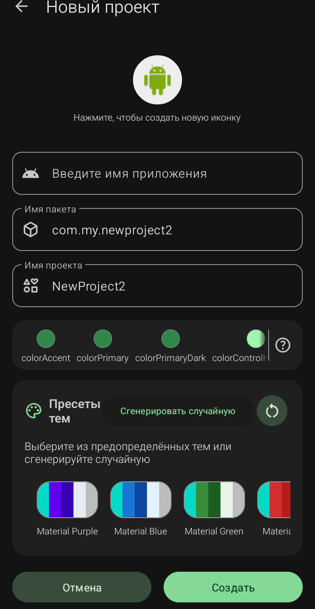

Экран «Новый проект» — это стартовая форма, которая открывается при создании нового приложения. Здесь задаются все базовые параметры будущего APK: иконка, имя, пакет, тема оформления и версии. От того, насколько правильно заполнены поля, зависит не только внешний вид приложения, но и возможность его публикации в магазинах.
⚠️ Важно: большинство полей этого экрана нельзя изменить после создания проекта без ручного редактирования системных файлов. Поэтому лучше сразу заполнить всё внимательно, чем потом исправлять через менеджеры ресурсов.
Экран состоит из нескольких логических блоков:
· Иконка приложения (по центру сверху)
· Три текстовых поля: имя приложения, имя пакета, имя проекта
· Цветовая палитра (12 цветовых тем)
· Пресеты тем с кнопкой генерации случайной
· Два поля версий: код версии и имя версии
· Кнопки «Отмена» и «Создать».
Даоее разберём пунк Иконка приложения.
Sketchware Pro 7 · Автор: RasNikGal · © 2026